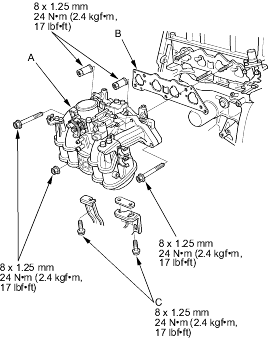
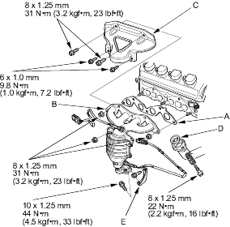
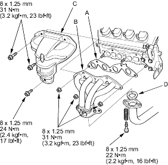

- Install the timing belt (see page 6-22).
- Adjust the valve clearance (see page 6-14).
- Install the cylinder head cover (see page 6-55).
- Install the intake manifold (A) and tighten the bolts/nuts in a criss-cross pattern in 2 or 3 steps, beginning with the inner nut. Always use a new intake manifold gasket (B).

- Tighten the three nuts securing the intake manifold and brackets.
- Install the new exhaust manifold gasket (A) and exhaust manifold (B). Loosely install the new nuts, then install the cover (C) and loosely install the new bolts.
D15Y5, D15Y6, D17A1 D17Z1, D17Z2 engines:

Except D15Y5, D15Y6, D17A1, D17Z1, D17Z2 engines:

- Tighten the bolts/nuts in a criss-cross pattern in 2 or 3 steps.
- Install the exhaust pipe with a new gasket (D).
- Install the exhaust manifold bracket (E) (D15Y5, D15Y6, D17A1, D17Z1, D17Z2 engines).